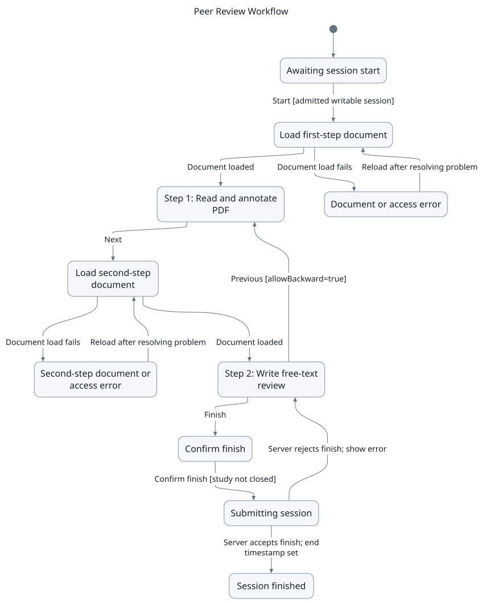
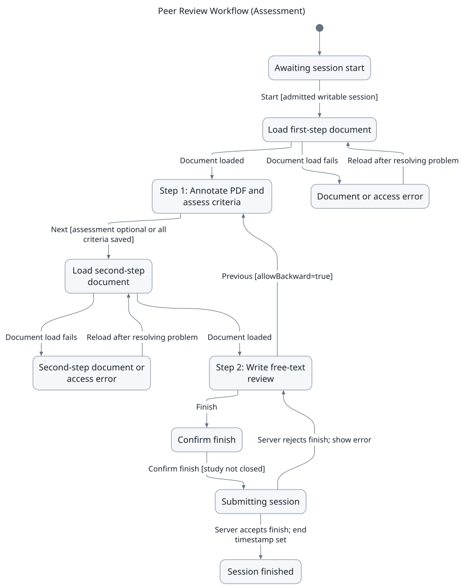
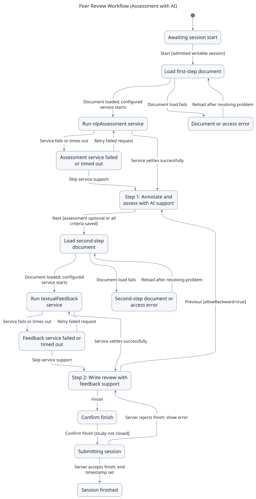
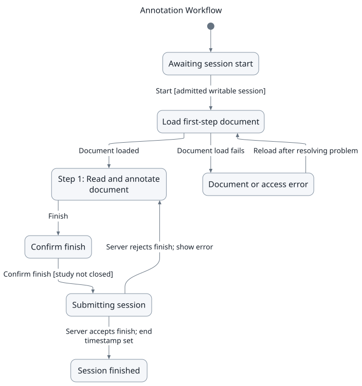
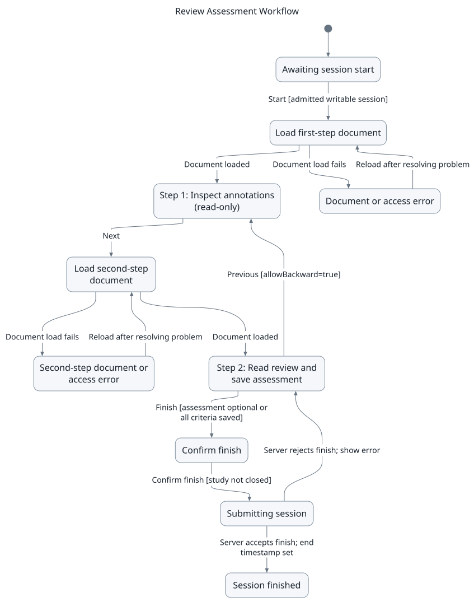
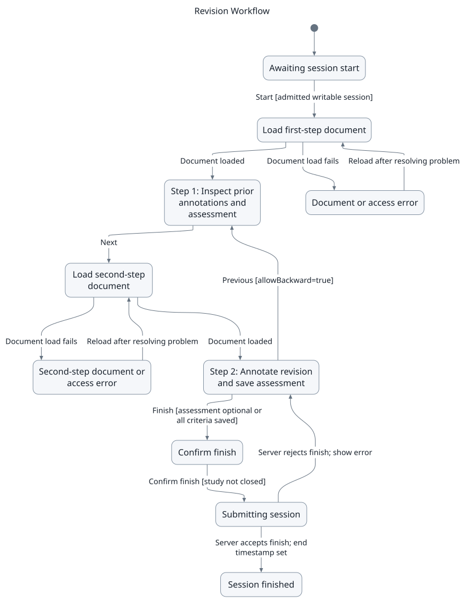
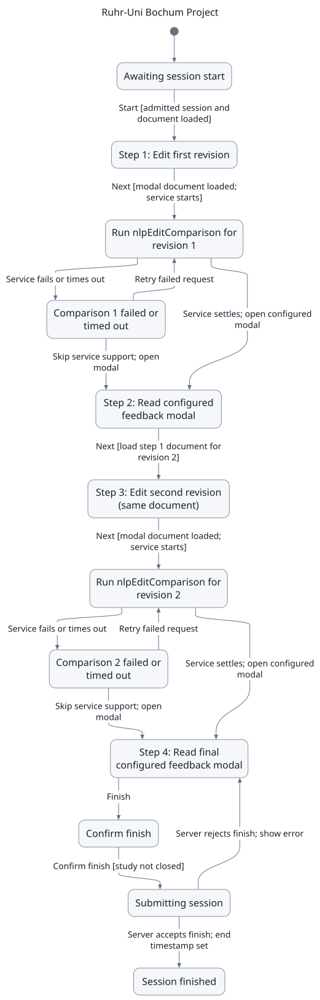
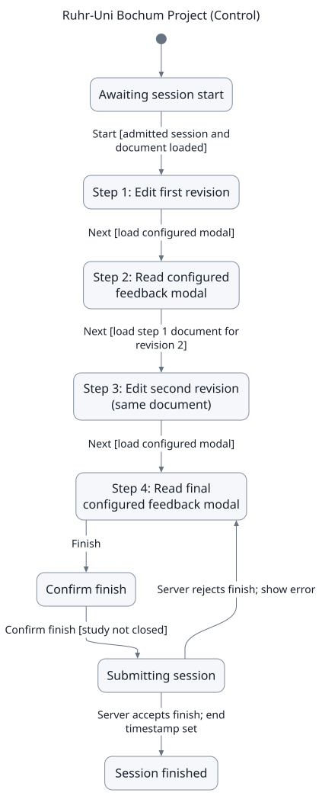

What is a Study?
In CARE, a Study is a controlled workflow that guides participants through a sequence of tasks, such as revising a document, annotating a PDF, or responding to AI-generated feedback. Studies are used in research settings to track how participants interact with documents and tools in a structured way.
A study has two core parts: the Study, which defines the workflow, its steps, and options;
and Study Sessions, which are the individual runs of the study for each participant, possibly at different times.
Each participant creates a study session when they join a study via an invitation link. All edits, annotations, and
interactions in that session are stored with a unique studySessionId. Sessions are independent, allowing multiple
participants to run the same study in parallel. Researchers can later analyze the data per session, including edits,
annotations, and navigation behavior.
Note
Behaviour data (such as button clicks, scrolling, or sidebar toggling) are only tracked if the user explicitly accepted tracking in the consent form. Without this consent, CARE does not log detailed interactions.
Workflows and Steps
A workflow defines the structure of a study. It consists of steps, where each step specifies:
The step type (editor, annotator, or modal step).
Whether the participant may move backward to a previous step.
Any required document (HTML text or PDF).
Optional step configuration, which may include:
services (e.g., NLP feedback)
placeholders
modal appearance
Note
Be careful with the term document:
In the frontend, the step definition tells CARE which document should be opened when that step runs.
In the database, the step definition controls whether a document is selectable or must come from another step’s output. For example, in the Ruhr-Uni Bochum Project, the Step 3 editor is based on the results of the Step 1 editor rather than a newly chosen document.
Step Types
Editor (Quill Editor) Used in workflows where participants write or revise text. The editor tracks edits step by step, grouped by
studySessionIdandstudyStepId. For background on the editor, see Quill Editor.Annotator (PDF Viewer) Used in workflows where participants highlight, annotate, or comment on PDFs. Annotations and comments are stored per session and per step, ensuring reproducibility. The annotator provides features such as the sidebar, color-coded highlights, NLP support, and annotation downloads. For technical details, see Annotator.
Modal Documents (Quill Editor with Placeholders) A modal document is rendered in a popup and cannot be edited directly by the participant. Instead, it is dynamically filled with placeholders that are resolved at runtime. This allows NLP results, comparisons, or step outputs to be displayed in a structured and visual way.
Placeholders
Placeholders are only relevant for Modal steps (Step Type = 3). They allow inserting dynamic content such as text, charts, or comparisons into read-only modal documents, optionally powered by NLP skills.
For details on how to configure and use placeholders, see Step Modal.
Current Available Workflows
The following predefined workflows specify the order of tasks in a study. You select the documents, assessment configurations, and services when creating the study. For information on copying or customizing a workflow, see Workflow Management.
Step types:
1 = Annotator: read, highlight, or comment on a PDF.2 = Editor: write or revise text in the Quill editor.3 = Modal: read configured content, optionally including placeholders for service results.
The state charts show the participant’s progress, including loading, service failures, and finish confirmation. They assume the participant has access to an open study. Study deadlines, changes to access, and continuation after a finished session are not shown. Open the SVG download to inspect a chart at full size without losing image quality.
Note
Assessment workflows require an assessment configuration for the relevant step. Forced Assessment is disabled by default. When enabled, participants must save a score and justification for each named criterion before moving forward from that step. AI suggestions and scores copied from a previous step do not count as saved assessments until the participant saves them.
Peer Review Workflow
Based on the EiWA Project: participants annotate a PDF and write a free-text review.
Step 1 - Annotator: Read and annotate the PDF.
Step 2 - Editor: Write the review in a separately selected editor document. Participants can return to Step 1 using Previous, then continue to Step 2.
This workflow has no predefined assessment or AI service. After writing the review, participants select Finish and confirm submission.


Peer Review Workflow: annotation followed by review writing.


Peer Review Workflow (Assessment)
Adds a structured assessment to the PDF annotation step.
Step 1 - Annotator and assessment: Read and annotate the PDF, then enter scores and justifications using the selected assessment configuration.
Step 2 - Editor: Write a free-text review in a separately selected editor document. Previous returns to Step 1.
When Forced Assessment is enabled for Step 1, all criteria must be saved before Next opens the editor. Step 2 has no predefined assessment or AI service.


Peer Review Workflow (Assessment): assess the PDF before writing the review.


Peer Review Workflow (Assessment with AI)
Adds AI support to structured assessment and review writing.
Step 1 - Annotator and assessment: The configured
nlpAssessmentservice provides support for assessing the PDF. Participants review its output, annotate the PDF, and save their own assessment.Step 2 - Editor: The configured
textualFeedbackservice supports review writing. Previous returns to Step 1. This step reuses the document selected for Step 1.
Select the skills or AI hooks, input mappings, and output handling during study setup. If a service fails or times out, participants can retry it or skip service support. Skipping a service does not waive the assessment condition when Forced Assessment is enabled. For more information about AI configuration, see Using AI Features.


Peer Review Workflow (Assessment with AI): service support at both steps.


Annotation Workflow
A single-step workflow for PDF annotation tasks.
Step 1 - Annotator: Read, highlight, and comment on the PDF, then select Finish and confirm submission.
There is no second step, backward navigation, predefined assessment, or predefined AI service.


Annotation Workflow: one PDF annotation step.


Review Assessment Workflow
Supports assessment of an existing review or submitted study session.
Step 1 - Annotator, read-only: Inspect the source PDF and its visible annotations without changing them. Show All Document Annotations controls whether default document annotations are included.
Step 2 - Editor, read-only, with assessment: Inspect the review content and save scores and justifications in the assessment sidebar. The editor content remains read-only. Previous returns to Step 1.
The second step is linked to Step 1. Select its assessment configuration during study setup. When Forced Assessment is enabled for Step 2, all criteria must be saved before Finish.


Review Assessment Workflow: inspect existing content and assess it.


Revision Workflow
Supports review of a previous submission followed by assessment of a revised submission.
Step 1 - Annotator and assessment, read-only: Inspect the previous document, annotations, and assessment without changing them.
Step 2 - Annotator and assessment: Annotate the revised document and save a new assessment. Scores from Step 1 can prefill this assessment, but remain unsaved until the participant saves them. Previous returns to Step 1.
Select a document and assessment configuration for each step. Step 2 does not automatically reuse the first document. When Forced Assessment is enabled for Step 2, all criteria must be saved before Finish. The chart assumes the default optional assessment in read-only Step 1.


Revision Workflow: compare prior work with a separately selected revision.


Ruhr-Uni Bochum Project
Studies revision behavior over two editing rounds with AI-supported feedback between them.
Step 1 - Editor: Write or revise the initial text.
Step 2 - Modal: Run the configured
nlpEditComparisonservice and display the prepared modal content.Step 3 - Editor: Revise the text again using the document and edits from Step 1.
Step 4 - Modal: Run
nlpEditComparisonagain and display the final modal content, then select Finish and confirm submission.
Backward navigation is disabled for every step. Configure the service inputs, output handling, and modal placeholders to display comparisons or feedback. A successful service request alone does not determine what the modal displays. Failed or timed-out requests can be retried or skipped.
For a detailed setup example, see Ruhr-Uni Bochum Project.


Ruhr-Uni Bochum Project: two revisions with configured service support.


Ruhr-Uni Bochum Project (Control)
Uses the same four-step structure as the Ruhr-Uni Bochum Project without predefined AI services.
Step 1 - Editor: Write or revise the initial text.
Step 2 - Modal: Read the prepared modal content without an automatic AI request.
Step 3 - Editor: Revise the text again using the document and edits from Step 1.
Step 4 - Modal: Read the final prepared modal content, then select Finish and confirm submission.
Backward navigation is disabled for every step. The modals can contain instructions or other prepared content. They are not necessarily empty. This workflow provides a control condition without the predefined comparison services.


Ruhr-Uni Bochum Project (Control): two revisions without predefined service support.


Creating a Study
This section describes how to create a new study in CARE. It includes preparing documents, adding placeholders, and defining the workflow.
Login and Document Preparation
Login to CARE using your username and password.
Go to
/dashboard/documents. ClickAddto upload a new pdf document which will be usable via the Annotator or click onCreateto add a new document, which you will be able to customize in the next part.Choose a document type if you clicked on
Create:General Editor Document: Opens a plain editor. Can be used for preparatory steps like the first revision.
Study Modal Document: Required for steps where dynamic placeholders are used. Name it clearly for later reference.
Note
Only Study Modal Documents can be used in modal steps (e.g., steps with placeholders).
Once created, documents appear in the list. Use the icons on the right to access, delete, publish, or edit names.
To insert placeholders in case of a Study Modal Document, open the document editor:
Click where the placeholder should be added.
Choose the placeholder type (text, chart, comparison).
CARE auto-numbers placeholders to preserve order.
After preparing all documents, click
Go Back...to return to the documents page.
Creating the Study
Navigate to
/dashboard/studies.Click “Add” to open the study creation form.
- Fill in the name (required) and description (required). You can also customize:
duration
number of study sessions in general
number of study sessions per user
the study being collaborative
anonymization of comments
resumability
multible submissions
start and end date and time
Select a workflow (required). See workflows here: workflows
Assign documents to steps (required). For editor and annotator steps, select the document to be edited or annotated. For modal steps, select the prepared Study Modal Document with placeholders.
Save the study. Click
Copy Linkto share the invitation link with participants.
Note
Participants joining through this link will automatically start a new Study Session.
Working with Study Templates
Study templates allow you to reuse study configurations for future studies, saving time and ensuring consistency.
Note
Study templates (saved study configurations) are different from email and document content templates, which define the text of emails (e.g. password reset, session links) and pre-filled document content. For content templates, see Email and Document Templates.
Creating Templates:
You can create a template in two ways:
From an existing study:
After creating and saving a study, locate it in the studies list
Click on
Save as templateto convert the study configuration into a reusable template
Directly from the Saved Templates modal:
Navigate to
/dashboard/studiesClick the
Saved TemplatesbuttonIn the modal, click
Create TemplateDefine the workflow, settings, and document assignments
Save to create a new template without creating a full study first
Using Templates:
Click
Saved Templatesto view all your saved templatesBrowse available templates with their configuration details (resumable, collaborative, multiple submissions, etc.)
Click the
Usebutton (play icon) on any template to create a new study based on that templateThe template’s workflow and settings will be pre-filled, which you can then customize as needed
Managing Templates:
Templates can be deleted from the Saved Templates modal (requires appropriate permissions)
Templates are marked with the
templateflag and remain separate from active studies
Creating Assignment-Based Studies
CARE supports creating studies based on specific documents or imported submissions (e.g., from Moodle). This is particularly useful for peer review workflows or grading scenarios where you want to assign specific studies to reviewers.
Single Assignment
To create a study with a single assignment:
Navigate to
Studiesin the DashboardClick
Add Single AssignmentSelect a study template (required)
Choose the assignment type:
Documents: Select from documents marked as ready for review
Submissions: Select from imported submissions (e.g., imported either from Moodle or manual inclusion)
Select the specific document or submission
Select one or more reviewers from the user list
Review and confirm the assignment details
Bulk Assignments
To create multiple assignments simultaneously:
Navigate to
Studiesin the DashboardClick
Add Bulk AssignmentsSelect a study template (required)
Choose the assignment type Documents or Submissions
Select multiple files from the table
Use filters and search to find specific details in the table
For submissions, you can filter by
Group IDto organize assignments
Select reviewers
You can filter to show only users with documents
Filter to show only users from the selected documents/submissions
Configure the reviewer assignment strategy:
Role-based selection:
Define how many reviews each user role should perform per file
Useful for distributing work evenly across teaching assistants, tutors, etc.
The system will automatically assign studies based on role quotas
Reviewer-based selection:
Manually distribute documents among selected reviewers
Specify exactly how many documents each reviewer should handle
Total assignments must match the number of selected documents/submissions
Review the assignment summary showing total reviews to be created
Confirm to create all assignments
Note
When creating bulk assignments with role-based selection, CARE automatically avoids assigning users to review their own documents or submissions.
Tip
For Moodle-integrated workflows, see Moodle Usage for details on importing submissions and publishing feedback back to Moodle.